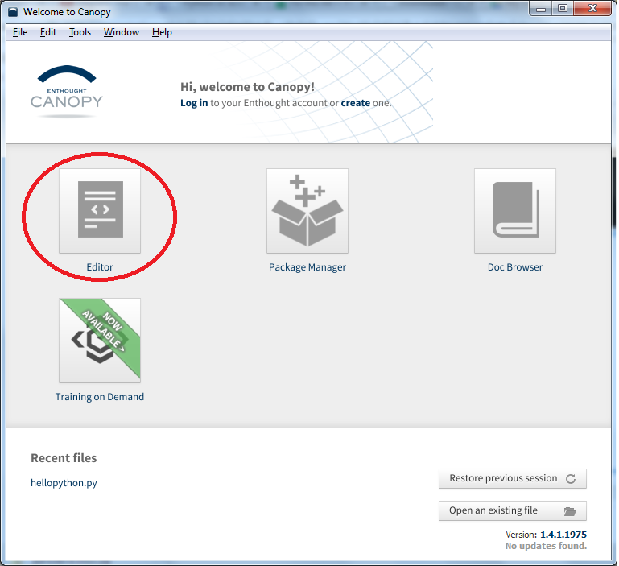

<!doctype html>
<html lang="en">

<head>
	<meta charset="utf-8">

	<title>Python in Science</title>

	<meta name="description" content="Slides for the talk on Python for the Python workshop">
	<meta name="author" content="Ivana Kajić">

	<meta name="apple-mobile-web-app-capable" content="yes" />
	<meta name="apple-mobile-web-app-status-bar-style" content="black-translucent" />

	<meta name="viewport" content="width=device-width, initial-scale=1.0, maximum-scale=1.0, user-scalable=no">

	<link rel="stylesheet" href="css/reveal.css" type="text/css" media="screen" />
	<link rel="stylesheet" href="css/night.css" id="theme" />

	<!-- For syntax highlighting -->
	<link rel="stylesheet" href="lib/css/zenburn.css">

	<!-- If the query includes 'print-pdf', use the PDF print sheet -->
	<script>
		document.write( '<link rel="stylesheet" href="css/print/' + ( window.location.search.match( /print-pdf/gi ) ? 'pdf' : 'paper' ) + '.css" type="text/css" media="print">' );
	</script>

	<!--[if lt IE 9]>
	<script src="lib/js/html5shiv.js"></script>
	<![endif]-->
</head>

<body>

	<div class="reveal">

		<div class="slides">

<section data-markdown data-separator="^\n---\n$">
<script type="text/template">

<section class="image-slide" data-background="img/python_transp.png" data-background-size="30%">

# Starting with Python
### with an introduction to programming

<small> CogNovo Python workshop, July 2014 </small>

<small> [Ivana](mailto:ivana.kajic@gmail.com) & [Jack](mailto:jack.mckayfletcher@plymouth.ac.uk) </small>
<br>
<small> PhD students@Plymouth University </small>

---

## I am not a programmer or a computer scientist, why should I learn how to code?

---

### Why you might want to learn how to code 
#### (... even if you're not a computer scientist!)


* It makes your daily interaction with computers easier and more efficient

* By learning how to code you learn how computers work 

* Coding skills are useful in any branch

* Develop computational thinking and fundamental computational skills

---

## What is programming?

---

### What is programming? ✓
### What is a programming language?

---

### What is programming? ✓
### What is a programming language? ✓
### Why do we need different programming languages?

---


---

### Interpreted vs. Compiled programming languages


---


[Link](http://www.youtube.com/watch?v=_C5AHaS1mOA) to the cartoon about compilers and interpreters

---


<small> source: [https://sites.google.com/site/pydatalog/pypl/PyPL-PopularitY-of-Programming-Language](sites.google.com/site/pydatalog/pypl/PyPL-PopularitY-of-Programming-Language)</small>

---

## Why do scientists need to code?


---

## Scientific computing

* Programming to satisfy the scientist's needs:
	* Getting the data: experiments, recordings, computer simulations, building models
	* Manipulate and process data
	* Vizualize results in various ways, prepare figures for publications

* Scientist do not want to spend time writing code, but doing research! 

* FORTRAN (Formula Translating System), C/C++/Java, Matlab, Python, R

---

## Reasons to use Python

* It’s **free**, cross-platform and easy to use -- already there on most *nix systems. Just run python in a terminal

* Great **support** -- abundance of tools,  especially tools needed in science and great for beginners who want to learn how to code, a lot of documentation

* Readable and **clear code** -- hides low level implementation details while following common coding conventions

* **Interactive** -- introspect your code on the fly

---


---


---

### Diving into Python

---

### Under the hood

* Python interpreter - 2 modes of operation:
	* Pass the script directly to the interpreter
```shell
ivana@lyra:~$ python hello.py 
hello
ivana@lyra:~$ 
```
	* Interactive mode
```shell
ivana@lyra:~$ python 
Python 2.7.3 (default, Mar 13 2014, 11:03:55) 
[GCC 4.7.2] on linux2
Type "help", "copyright", "credits" or "license" for more information.
>>> 
```

* **Packages**: Extensions to support additional functionality in Python 

---

### Python packages and tools will see today:

* Extensions to the interpreter and the editor: [IPython](http://ipython.org/), [IPython Notebook](http://ipython.org/notebook.html) or IDE (e.g. [Canopy](https://www.enthought.com/products/canopy/))

* Maths and numeric manupulations: [NumPy](http://www.numpy.org/)

* Plotting and visualization: [Matplotlib](http://matplotlib.org/)

* Natural language processing: [NLTK](http://nltk.org/)

* Psychophysics: [PsychoPy](http://www.psychopy.org/)

* Machine learning, data processing and data mining: [Scikit-learn](http://scikit-learn.org/stable/index.html), [MDP](http://mdp-toolkit.sourceforge.net/)

---

## Satisfying basic scientists' needs 


* [SciPy](http://www.scipy.org/) Stack is a bundle of Python packages for mathematics, science, and engineering

* Some of the included packages in the SciPy stack: NumPy, SciPy library, Matplotlib, IPython, Pandas...

* There are two options to get these packages
    * Download each package separately ([instructions](https://github.com/ikajic/pyscience/blob/master/README.md))
    * Get the whole set as a single installation file: [Anaconda](http://continuum.io/downloads) or [Canopy](https://www.enthought.com/products/canopy/)


---

## IPython

* [IPython](http://ipython.org/) is a simple yet powerful interactive environment to write Python code

* It's similar to the standard Python interpreter, but provides more functionality which makes coding easier and more efficient

* For example: auto-completion using `tab`, save values and restore them later, the history of commands, timing of functions

* IPython [Notebook](http://ipython.org/notebook.html) is a web-based interactive environment to write and execute code, write text and mathematical formulas, include plots...

---

### IPython


---

### IPython notebook (web-browser)


---


---

## Dealing with numbers: NumPy

* [NumPy](http://www.numpy.org/) is a powerful Python package for efficient manipulation with numbers 

* Numbers are "the data": measurements from experiments, results of computer simulations, etc.

* Numbers are stored in containers called `arrays` 

* For users familiar with MATLAB there is a [cheat sheet](http://wiki.scipy.org/NumPy_for_Matlab_Users) showing Python-equivalents
 

---

### NumPy Array

* Basic data structure used to store numbers

* Vectors are one-dimensional arrays, matrices are two-dimensional, but we can also have N-dimensional arrays

    * Vector containing four numbers: `[1, 2, 3, 4]`
    * Matrix containing six numbers in two rows and three columns: 
        
        `[[1, 2, 3],`
        
        ` [4, 5, 6]]`


* Indexing starts with `0` (not `1`), so the first element in a vector is at the `0`-th position


---

``` python
>>> import numpy as np

# Create an array with numbers from 0 to 15
>>> a = np.arange(0, 15)
>>> a
array([ 0,  1,  2,  3,  4,  5,  6,  7,  8,  9, 10, 11, 12, 13, 14])

# What is the first element in the array? 
>>> a[0]
0

# What is the shape of our array?
>>> a.shape
(15,)

# Make a new array, this time with rows and columns
>>> b = a.reshape(3,5)
>>> b
array([[ 0,  1,  2,  3,  4],
       [ 5,  6,  7,  8,  9],
       [10, 11, 12, 13, 14]])
>>> b.shape
(3, 5)

# Get all the numbers in the second row 
>>> b[1, :]
array([5, 6, 7, 8, 9])

>>> type(b)
<type 'numpy.ndarray'>
```

---


    
* [Matplotlib](http://matplotlib.org/) is a Python package for data plotting

* Supports different plotting options: histograms, power spectra, bar charts, errorcharts, scatterplots... with just a few lines of code

* Ok, let's plot in Python!

---


### Study: How does the amount of chocolate influence happiness?

 

---

### Plotting code

```python
>>> import matplotlib.pylab as pl
>>> import numpy as np

# Load data on a drive into two NumPy arrays
>>> chocolate = np.load('chocolate.npy')
>>> happy = np.load('happiness.npy')

# Plot array chocolate vs array happy
>>> pl.plot(choc, happy)

# Label horizontal axis (x) and vertical axis (y)
>>> pl.xlabel('Chocolate (gram)')
>>> pl.ylabel('Happiness (smiling)')

# Give a title to our plot
>>> pl.title('Influence of chocolate on happiness')

>>> pl.grid(True)
>>> pl.savefig("chocolate.png")
>>> pl.show()
```       

---


### With matplotlib you can do this


---

### ... and this! 


* And much more! These examples are taken from the gallery at the [matplotlib page](http://matplotlib.org/gallery.html#) which contains many beautiful plots and the source code used to generate them

---

## NLTK

* [Natural language toolkit](http://nltk.org/) suitable for linguists, engineers, students, educators, researchers, and industry users alike 

* Suite of text processing libraries for classification, tokenization, stemming, tagging and parsing

* Example applications: RSS Feeds, extracting text from PDF, Word documents, Tweets ...                   

---

## More on NLTK

* Fundamentals of writing Python programs, working with corpora, categorizing text, analyzing linguistic structure...

* Available [online](http://nltk.org/book/) for free:                   


---

## A peek into the NLTK

```python
>>> import nltk
>>> sentence = "Good evening! Would you like some tea?"
>>> tokens = nltk.word_tokenize(sentence)
>>> tokens
['Good', 'evening', '!', 'Would', 'you', 'like', 'some', 'tea', '?']
>>> tagged = nltk.pos_tag(tokens)
>>> tagged
[('Good', 'NNP'), ('evening', 'NN'), ('!', '.'), 
('Would', 'MD'), ('you', 'PRP'), ('like', 'VB'), 
('some', 'DT'), ('tea', 'NN'), ('?', '.')]

# NNP and NN is abbreviation for a noun, VB for a verb and PRP for a personal pronoun
```

---

### Reading Jane Austen's Emma with NLTK *


* NLTK also includes short excerpts from some books provided by the Project Gutenberg

```python
>>> import nltk
>>> nltk.corpus.gutenberg.fileids()
['austen-emma.txt', 'austen-persuasion.txt', 'austen-sense.txt', 
'bible-kjv.txt', 'blake-poems.txt', 'bryant-stories.txt', 
'burgess-busterbrown.txt', ..., 
'shakespeare-hamlet.txt', 'shakespeare-macbeth.txt', 'whitman-leaves.txt']

>>> emma = nltk.corpus.gutenberg.words('austen-emma.txt')
>>> emma[10:20]
['I', 'Emma', 'Woodhouse', ',', 'handsome', ',', 'clever', ',', 'and', 'rich']

>>> print "Number of words:", len(emma)
Number of words: 192427
```
<small>\* But I'd rather recommend a cup of tea and a blanket istead of Python for book reading </small>

---

## 

* [PsychoPy](http://www.psychopy.org/): stimulus presentation and control for a wide range of neuroscience, psychology and psychophysics experiments

* Free and a powerful alternative to to Presentation™ or e-Prime™


---


---


---

### PsychoPy features

* Huge variety of stimuli generated in real-time:
	* Gratings, random dots, movies, text, sound...

* Flexible stimulus units (degrees, cm, pixel)

* Cross-platform: Windows, OS X, Linux

* [Coder](http://www.psychopy.org/coder/coder.html#coder) and [Builder](http://www.psychopy.org/builder/builder.html#builder) interface

* Input from keyboard, mouse, microphone or button boxes


---

## 

* [Scikit-learn](http://scikit-learn.org/stable/index.html): satisifes all the data mining and data analysis needs 

* Abundance of algorithms for supervised and unsupervised learning 

* Classification, regression, clustering, model selection, dimensionality reduction and data preprocessing

---

<section class="image-slide" data-background="img/scikit_classifiers_.png" data-background-size="70%" data-background-color="#ffffff">

---


## 

* [MDP](http://mdp-toolkit.sourceforge.net/) is a modular toolkit for data processing

* Set of algorithms for data mining, classification, signal processing, pattern recognition...

* In MDP every algorithm is referred to as a `node` which can be modified by a user

* Built on NumPy and SciPy

---

## MDP: Detection of objects

* Imagine having 2D geometrical objects such as filled or emtpy circles and rectangles which are made of random points, for example:
<center>  </center>

* Our goal is to find out how many objects there are in this image


---

## MDP: Detection of objects

* There are many ways to solve this problem, but we love neurons and will use a special type of a neural network called [growing neural gas (GNG)](http://en.wikipedia.org/wiki/Neural_gas) to solve it

* GNG spreads a sheet of neurons over the data and tries to position neurons so they maximally cover clusters of data

* At every time step, the number of neurons in network increase until some final condition is met

---

### Neural network in the beginning...


<center>  </center>

---

### ... and after the learning!


<center> </center>


---

### Code that does what we have just seen:

```python
import mdp

x = generate_random_circles_and_rectangles()

gng = mdp.nodes.GrowingNeuralGasNode(max_nodes=75)

STEP = 500
for i in range(0, x.shape[0], STEP):
    gng.train(x[i:i+STEP])
gng.stop_training()

n_obj = len(gng.graph.connected_components())
print n_obj
```

```
Output: 5
```

<ul><small> \* Complete source code is available [here](http://mdp-toolkit.sourceforge.net/code/examples/gng/gng.html) </small></ul>

---

### End of the 1st part

---

# Getting started with Python

---

## Enthought CanoPy
<centre>https://store.enthought.com/downloads/</centre>


* Easy to intsall
* Light Weight
* Lots of pacakges included
* Easy to use
* Perfect for getting a taste of Python

---

## Your first Python Program!
* Open Enthought Canopy and Click 'Editor'

<center>  </center>

---

## The Cannopy Enviroment
  </center>
<br><br><br><br><br><br>

* Green box: File browser
* Blue box: Text editor
* Red box:  Console (IPython)

---

## "Hello World"
### Your first Python program!

---

## Variables in Python
In Python variables are like labels given to objects:
```python
>>> a = 1
```

```python
>>> a = 2
```

```python
>>> b = a
```


---

## Some Built in Variable Types

* <bf>ints</bf>: 0, ±1, ±2, ±3, ±4,….
* <bf>floats</bf>: -0.11, 0.012, 1.13, 3.141592, 2.71828
* strings: "The Life of Brian", "The Flying Circus"
* bools: True, False
* lists: ["Chapman", "Cleese", "Gilliam", "Idle", "Jones", "Palin"], ["Chapman", 33, 3.14, False]

---

## Some Built in Operators

* \+ (addition)

```python
>>> 1 + 2
3
>>> [1,2,3] + [4,5]
[1,2,3,4,5,6]
>>> "Hello " + "World!"
"Hello World!"
```

* \- (subtraction)

```python
>>> 1 - 2
-1
```

---

* \* (multiplication)

```python
>>> 2*3
6
>>> [0]*3
?
```

* / (division)

```python
>>> 6/2
3
>>> 1/3
?
>>> 1.0/3
? 
>>> 1/0
? 
```

---

## More Operators

* % (modulo)

```python
>>> 6 % 3 
0
>>> 6 % 4
2
```

* \** (power)

```python
>>> 2**3
8
>>> 10**4
10000
```

---

* or (logical or)

```python
>>> True or False
True
>>> False or False
False
```

* and (logical and)

```python
>>> True and False
False
>>> True and True
True
```

---

## Even more operators


* not (logical not)

```python
>>> not True
False
>>> not False
True
>>> not not not not True
?
```
	
* == (equal)

```python
>>> 6 == 5 + 1
True
```

---

* != (not equal)

```python
>>> 5 != 5
False
```

* < (less than)

```python
>>> 2 < 3
True
>>> 2**3 < 3**2
?
```

---

## Functions


We define functions in python like this:

```python
def adds_two(x):
	#This function adds two to things
	return x + 2

>>> adds_two(4)
6
```

---

### Exercise 1: Make a function that returns true if its input is divisible by 3 and false otherwise

---

## Did anyone get it?

```python
def div_three(x):
	return x % 3 == 0


>>> div_three(9)
True
>>> div_three(10)
False
```

---

## If Statements 

```python
if (some statement is true):
	(Do something)
else:
	(Do this other thing)
```
<br>
For example this function multiples its input by three if it is even and by two if it is odd:

```python
def example_func(x):
	if x % 2 == 0:
		return x*3
	else:
		return x*2		
```

---

## Exercise 2: Make a function which squares its input only if the input is 3 or 5 otherwise it returns its input + 1

---

## The answer...

```python
def my_second_func(x):
	if x==5 or x==3:
		return x**2 #You could write this x*x

	else:
		return x + 1

```

---

## Lists

Making Lists:
```python
>>> xs = [0,1,2,3,4,5,6,7,8,9]
>>> ys = range(10)
[0,1,2,3,4,5,6,7,8,9]
>>> ys == xs #Just making sure xs and ys are the same
True
>>> xs[4] #Getting the 4th item from the list!
4
>>> xs.append(10) #adding the number 10 to the end of the list
>>> xs
[0,1,2,3,4,5,6,7,8,9,10]

```

---

## For loops

* A for loop goes through each item in a list and does something to it. 
* The following function takes a list return the result of adding two to each item in it:

```python
def add_two_again(xs):
	new = []
	for x in xs:
		new.append(x+2)

	return new 

>>> print add_two_again([1,2,3])
[3,4,5]
```

---

## If statements and for loops

* We can combine if statements and for loops.
* What do you think the following function does?

```python
def mystery_func(xs):
	new = []
	for x in xs:
		if x==2:
			new.append(x)

		else: 
			new.append(x+1)

	return new

>>> print mystery_func([1,2,2,1])
?

```

---

## Exercise 3: Make a function that takes a list and returns only the even items in that list.

---

## The answer...

```python
def gets_evens(xs):
	new = []
	for x in xs:
		if x % 2 = 0:
			new.append(x)
	return new

>>> print get_evens([1,2,3,4,5,6])
[2,4,6]
```

Or for the pros:

```python
def get_evens(xs):
	return filter(lambda x: x % 2 ==0,xs)
```

---

## Importing packages!


 


</script>            
</section>                                       

   		</div>

	</div>

	<script src="lib/js/head.min.js"></script>
	<script src="js/reveal.min.js"></script>

	<script>

		// Full list of configuration options available here:
		// https://github.com/hakimel/reveal.js#configuration
		Reveal.initialize({
			controls: true,
			progress: true,
			history: true,
			center: true,
			margin: 0.0,

			theme: Reveal.getQueryHash().theme, // available themes are in /css/theme
			transition: 'fade', // default/cube/page/concave/zoom/linear/fade/none

			// Optional libraries used to extend on reveal.js
			dependencies: [
				{ src: 'lib/js/classList.js', condition: function() { return !document.body.classList; } },
				{ src: 'plugin/markdown/marked.js', condition: function() { return !!document.querySelector( '[data-markdown]' ); } },
				{ src: 'plugin/markdown/markdown.js', condition: function() { return !!document.querySelector( '[data-markdown]' ); } },
				{ src: 'plugin/highlight/highlight.js', async: true, callback: function() { hljs.initHighlightingOnLoad(); } },
				//{ src: 'plugin/zoom-js/zoom.js', async: true, condition: function() { return !!document.body.classList; } },
				{ src: 'plugin/notes/notes.js', async: true, condition: function() { return !!document.body.classList; } }
			]
		});

	</script>

</body>
</html>
